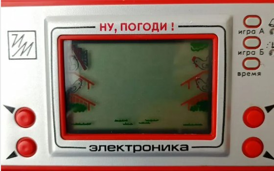
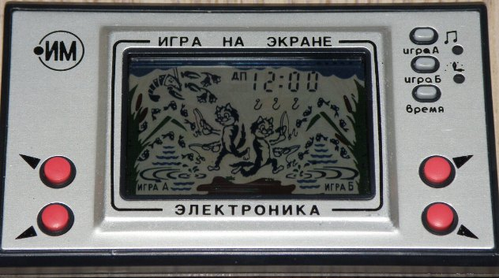
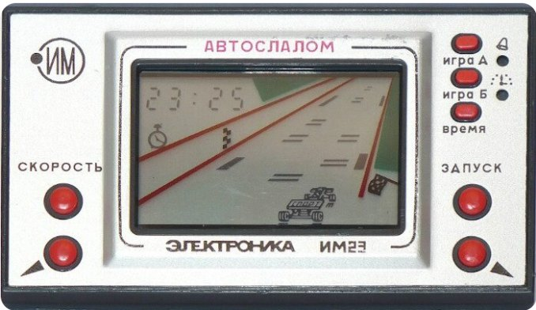
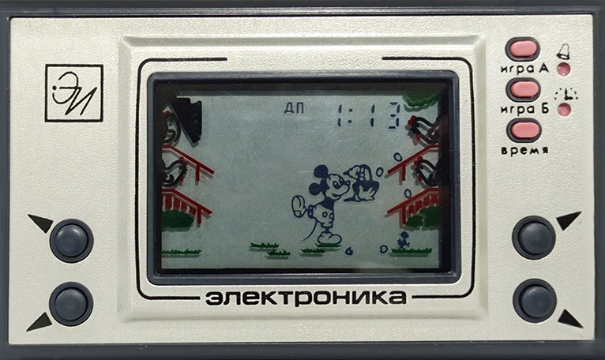
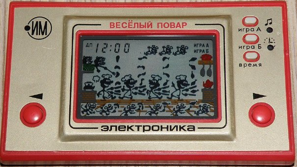
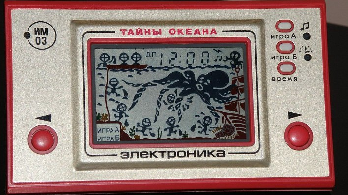

Alexey Pajitnov wrote Tetris in 1984 on an Elektronika-60 while working at the Computing Center of the USSR Academy of Sciences, and that game still makes it onto every list of the "most influential video games of all time". In that same year, 1984, Pac-Man was selling in the US for the fourth year running, and in Japan Nintendo was preparing to export the NES. In the same year two British students wrote Elite on the ZX Spectrum, with procedural generation of eight galaxies in 22 kilobytes of memory.
By the start of 1992 the USSR was over. Tetris became Nintendo's property through a chain of intermediaries, and no other world-class Soviet games appeared over the next ten years, though individual studios made good projects — I'll count the '90s as the Soviet legacy. But here's a question that seems far more interesting to me than "why did it turn out this way": how could one and the same country, at one and the same time, design the Buran's guidance system with automatic landing by radio beacons, yet not make a mass-market arcade machine on the level of Space Invaders?
In response I've often heard "there was no market, no capitalism, no competition". I don't believe that. I don't believe it because the absence of a market didn't stop those same people from designing the Energia-Buran, the Tu-160, and the nuclear icebreaker Arktika. Yet a quality mass-market television set, the Rubin, somehow couldn't be made in that same country. And neither could a quality mass-market game.
You don't have to be a seasoned game designer who knows what ECS and GOAP are; it's enough to understand that a game is a product assembled from code, graphics, sound, game design, and testing, and that each of these branches requires separate people with separate expertise. What follows is a bit of arithmetic and some historical examples.
A game is a large engineering task
There's a persistent myth that games are made by "creative teams". That's true exactly to the extent that a spacecraft is made by "creative designers", and any game on the level of Doom, Half-Life, or Witcher 3 is first and foremost an engineering product. The creative part is of course there, and it takes up no small share of the total effort, but the rest is compilers, renderers, physics engines, save-serialization systems, networking code, tools for artists, asset-conversion pipelines, and testing across different configurations.
When people say "Doom was made by John Carmack", they mean not an artist and not a writer, but the programmer who figured out how to render pseudo-3D on a 386 processor without a floating-point coprocessor. When people say "GTA III changed the industry", they mean not the plot about the mafia, but the engine that for the first time made it possible to seamlessly stream an open city with cars, pedestrians, collision physics, and radio stations, without running into the PS2's 32 megabytes of memory.
A game as an engineering system is arranged roughly like this (very simplified):
GAME
│
┌─────────────────┼─────────────────┐
▼ ▼ ▼
ENGINE CONTENT PIPELINE
│ │ │
┌────┼────┐ ┌─────┼─────┐ ┌────┼────┐
▼ ▼ ▼ ▼ ▼ ▼ ▼ ▼ ▼
render phys net models sound design editor conv CI/CD
│ │ │ │ │ │ │ │ │
and each of these points is a separate subsystem
that has to be designed, written, tested,
and maintained throughout the whole development cycleBut remove any branch from this diagram and there's no game. Not "a worse game", but no game at all. Without a renderer there's no picture. Without a level editor the artists can't assemble a single room. Without a build system the build won't reach the testers and will crash for every other player, because programmers are people too — they get tired, don't sleep enough, bring their own problems into the office, and write clumsy, buggy code, them too. Each of these branches is the work of people of a certain skill level, of whom there are roughly as many in the population as there are, and they don't become more numerous just because you really wanted them to.
Where talented developers come from

Here I may say an unpleasant thing, and some readers will close the article and go read something more patriotic and cheerful, but without this there's no point going further. A talented engineer is not the result of, and not a function of, a good education — though an education is of course desirable, because it helps you push past your boundaries and come up with something new. A good education can turn a talented person into a good specialist, but if the raw material isn't there, no education will help.
This is simply my observation of engineering teams of more than ten people. Three do two-thirds of the real work, and the rest do everything else. This proportion reproduces itself in any country, any company, and any era, as long as you don't beat people with sticks.
The share of people capable of independently designing a complex engineering system is somewhere around half a percent of the population, on an optimistic estimate — I could be wrong. Not "five percent of educated people" and not "two percent of IT folks", but half a percent of everyone alive at all, including infants, bureaucrats, and pensioners. This is not a problem of society and not the result of some segregation; it's simply the distribution of abilities, which works the same in Japan, Nigeria, or Finland, and Russia is no exception here.
From this half-percent there's further selection by specialization, and the share of those capable of writing a renderer on the level of id Tech or a physics engine on the level of Havok is already a few thousand people on the whole planet. These people can be listed by name; big studios know them all, keep them in their résumé databases, and hunt for them, offering top-manager salaries.
The arithmetic of the game industry in the USSR
Now let's take the USSR of the late '80s — the period when the Western game industry had already taken shape, while a Soviet one could theoretically have appeared. The population of the USSR was about 290 million people; add to that the Comecon countries (East Germany, Poland, Czechoslovakia, Hungary, Bulgaria) — another roughly 110 million. In total the socialist bloc is about 400 million potential consumers and potential developers.
The share of people capable in principle of working as a game programmer at the 1990 level is at best a few percent of the working-age population with a technical education. Of those, the share of the talented, competent ones capable of independently solving a non-trivial engineering problem is that same half percent of the population. Then from these people you have to subtract those who work in defense (and these are the best, truly the best, and a submarine won't design itself), those who work on space (also the best, and Buran along with Luna-24 and earlier are proof of that), those who write compilers for the BESM and Elbrus machines, those engaged in scientific computation at the institutes of the Academy of Sciences and other design bureaus, research institutes, and technical centers.
In the dry residue, what's left for a hypothetical game industry is a resource of around a few thousand people across the entire socialist camp, of whom a handful reach the level needed to independently create a commercial game of not even world but simply all-Union level. And that's on the condition that all these people even know games exist as an industry, that they want to do it, and that they have access to up-to-date hardware for development. Many didn't know, didn't want to, and didn't have it.
Back-of-the-envelope calculation (1989):
Socialist bloc: ~400 mln people
Working-age population: ~250 mln
With a technical education: ~25 mln
Programmers of any level: ~500 thousand
Talented programmers: ~50 thousand
Free from strategic
industries: ~5 thousand
Aware of the existence
of the video-game industry: ~500
With access to up-to-date
hardware for development: ~50
Actually able to make
a commercial game: ~10
The West at the same time: ~800 mln
multiply everything else by about 4, why 4 see belowAnd you've most likely heard of these people or know them: Alexey Pajitnov, Tetris (1984);
Nikolai Lebedev (not to be confused with the film director) and the ParaGraph team; Nikita Skripkin, founder of Nikita Ltd. (1991); Andrey Kuzmin (K-D Lab, 1996); Andrey "Maddox" Medox — a flight-sim guy who by 1990 was already doing amateur simulators, still far from IL-2 but laying the foundation; János Kiss and the Novotrade team (Hungary). So there simply aren't dozens of specifically Soviet names as of 1990 — there's Pajitnov, a couple more people around him, and a potential that only gets realized in the mid-to-late '90s, already in a completely different country and a different economy.
This is not the machinations of enemies, not a "rotten system", and not an "absence of capitalisssm". I just estimated it on my fingers, and let's compare counts in the comments if you disagree. You simply don't have enough people with the right qualifications to make rockets, icebreakers, reactors, and video games all at the same time. You have to choose, and it's clear that under conditions of cold confrontation the choice wasn't made in favor of video games.
The war for talent

In the US in 1989 the population was about 250 million, and the game industry took shape mainly in California, Texas, and Seattle out of people who came from all over the world. Sid Meier is American, Gabe Newell is American. Nvidia's founder Jensen Huang is a Taiwanese who emigrated to the US as a child. Unreal Engine's creator Tim Sweeney is American, but the Epic Games team is made up of people from over thirty countries. Igor Sikorsky, who has nothing to do with games but illustrates the general mechanism — one of the fathers of 20th-century helicopter aviation — also left the Russian Empire for the US, and his company built Sikorsky Aircraft there.
Add Japan with its own contingent here. Shigeru Miyamoto, who designed Mario, Zelda, and almost everything Nintendo put out over thirty years, and Hideo Kojima with Metal Gear Solid, and Hironobu Sakaguchi with Final Fantasy, and another hundred people of a slightly lower tier. This is both a result of Japanese culture (suriawase and kaizen) in the broad sense, and a result of the fact that 1980s Japan ended up with a critical mass of talented engineers who got cheap and accessible hardware into their hands (the Famicom, MSX, arcades) and the ability to sell that hardware on the world market.
Europe added Peter Molyneux, the Poles from CDPR, the Swedes from DICE, and the Finns from Remedy. Each of these studios is a local concentration of talent that grew up naturally. Collectively the Western bloc had at its disposal not "twice as many people" but tens of times more people of the right level, because, firstly, the population was larger, and secondly, and this is the main thing, talents from all over the world came there to work — from India, from China, from Eastern Europe, from that same former USSR. Silicon Valley is not an American phenomenon; it's a global vacuum cleaner that gathers the best engineers on the planet into one geographic point, and that vacuum cleaner gave the ×4 multiplier I mentioned above.
What we ended up with

To be fair, it should be said that games were made in the USSR, and some of them were even quite good in technical terms. Tetris is of course the main example; you can also recall the "Elektronika IM-02 'Nu, pogodi!'", which was a copy of the Nintendo Game & Watch and was made by the Research Institute of Electronic Technology in Zelenograd. It was made technically competently, but precisely because it was a copy and not an original design. The BK-0010 (partly a PDP-11) and the Agat (an Apple II compatible) had a small library of homegrown games, mostly clones of Western hits.
After 1991 this whole infrastructure, which had been starting to take root, collapsed, and the programmers left: some to banks, to write payment systems; some emigrated (Sergey Brin and the founders of many Western studios are also from this wave); others went off to trade at the markets and shuttle fur coats from Turkey. Those who stayed in the industry made either localizations of Western games or niche projects for the post-Soviet market (Fargus, 7th Wolf, Triada, Buka).
But even that period gave the industry plenty of bright projects: Hard Truck (Dalnoboyshchiki), Space Rangers, the Sea Dogs (Korsary) and Cossacks series, Turgor, IL-2 Sturmovik, Rage of Mages (Allods), Vangers, Perimeter, and S.T.A.L.K.E.R., which became, probably, the only Russian-language game of the 2000s to earn genuinely worldwide recognition. You can also include the Metro series by 4A Games here, though 4A is already a Ukrainian story that grew out of GSC in the 2000s, but plenty of guys from all over the post-CIS space worked there too, and Saber also helped with engine development.
Russian and post-Soviet gamedev (what I recalled and played myself):
USSR (before 1991)
1984 — Tetris (Alexey Pajitnov)
1980s — "Nu, pogodi!" (IM-02)
1980s — games on the BK-0010, Agat, MK-90 (mostly clones and ports)
1990s
1996 — Vangers (K-D LAB)
1996 — Russian Roulette (Logos)
1997 — Parkan (Nikita)
1997 — MadSpace (Maddox Games)
1998 — Z.A.R. (Maddox Games)
1998 — Rage of Mages / Allods: Seal of Mystery (Nival)
1998 — Hard Truck / Dalnoboyshchiki (1C)
1999 — Rage of Mages II / Allods: Lord of Souls (Nival)
2000s
2000 — Sea Dogs (Akella) — the basis for the Korsary series
2001 — Cossacks: European Wars (GSC Game World)
2001 — IL-2 Sturmovik (Maddox Games)
2002 — Space Rangers (Elemental Games)
2003 — Blitzkrieg (Nival)
2004 — Space Rangers 2 (Elemental Games)
2004 — A.I.M. / Mechanoids (SkyRiver Studios)
2004 — Perimeter (K-D LAB)
2005 — Ex Machina (Targem)
2005 — Brigade E5: New Jagged Union (Apeiron)
2005 — Pathologic / Mor. Utopia (Ice-Pick Lodge)
2006 — Heroes of Might & Magic V (Nival)
2006 — Age of Pirates / the Korsary line (Akella)
2007 — S.T.A.L.K.E.R.: Shadow of Chernobyl (GSC Game World)
2007 — 7.62 (Apeiron)
2007 — TimeShift (Saber Interactive)
2007 — X-Blades (Gaijin)
2008 — S.T.A.L.K.E.R.: Clear Sky (GSC)
2008 — King's Bounty: The Legend (Katauri)
2009 — S.T.A.L.K.E.R.: Call of Pripyat (GSC)
2009 — Man of Prey / Maroder (Apeiron)
2009 — Turgor (Ice-Pick Lodge)
2009 — Cryostasis (Action Forms)
2010s
2010 — Metro 2033 (4A Games)
2010 — World of Tanks (Wargaming)
2010 — Cut the Rope (ZeptoLab)
2010 — Apache: Air Assault (Gaijin)
2011 — Metro: Last Light (4A Games)
2012 — Blades of Time (Gaijin)
2013 — War Thunder (Gaijin Entertainment)
2013 — The Void (Ice-Pick Lodge)
2015 — World of Warships (Wargaming)
2016 — Escape from Tarkov (Battlestate Games)
2016 — Crossout (Targem Games)
2016 — Homescapes (Playrix)
2016 — Survarium (Vostok Games)
2018 — Pathfinder: Kingmaker (Owlcat Games)
2019 — Metro: Exodus (4A Games)
2019 — Pathologic 2 (Ice-Pick Lodge)
2021 — Pathfinder: Wrath of the Righteous (Owlcat Games)
2020s
2023 — Atomic Heart (Mundfish)
2024 — S.T.A.L.K.E.R. 2 (GSC Game World)That's pretty much everything that can be called significant on a world level over 35 years. For comparison: in 2007 alone there came out BioShock, Portal, Mass Effect, Call of Duty 4, Crysis, Halo 3, Assassin's Creed, and The Witcher — plus fifty good games of a lesser tier.
2007 (World)
BioShock (2K Games)
Call of Duty 4: Modern Warfare (Activision)
Halo 3 (Microsoft)
Mass Effect (BioWare)
Assassins Creed (Ubisoft)
Crysis (Crytek)
Half-Life 2: Episode Two + Portal + Team Fortress 2 (Valve)
Super Mario Galaxy (Nintendo)
The Legend of Zelda: Phantom Hourglass (Nintendo)
Metroid Prime 3: Corruption (Nintendo)
Uncharted: Drake's Fortune (Sony)
Ratchet & Clank Future: Tools of Destruction (Sony)
God of War II (Sony)
Gears of War (PC version)
Need for Speed: ProStreet (EA)
FIFA 08, Madden NFL 08, NBA 2K8 (2K)
Guitar Hero III: Legends of Rock (Activision)
The Simpsons Game (EA)
Tony Hawks Proving Ground (Activision)
The Witcher (CDPR)
World in Conflict
Company of Heroes: Opposing Fronts
Painkiller: Overdose
Hellgate: London
Two Worlds
Overlord
Stranglehold
Kane&Lynch: Dead Men
Clive Barkers Jericho
Blacksite: Area 51
Sega Rally RevoIf you look at the first list, it's clear that significant post-CIS games are almost always the work of a small team in which one, two, or three talented key people are clearly traceable, and the game exists exactly as long as those people keep making it. Like Ice-Pick Lodge with Nikolai Dybowski, or 4A Games with the Maksimchuk + Prohorov + Shishkovtsov team — and the rest of the studios were also rarely bigger than twenty people.
This is not an industry in the sense of the Western industry, where there are hundreds, if not thousands, of studios competing with each other and pouring employees from one project into another. This is a dozen studios, each held up by one or two games and ten people, and if a person gets tired or leaves, the studio disappears. This is exactly what the arithmetic says. There's little talent, there's no one to concentrate it in one point, the market isn't big enough to create competition for these people, and as a result every successful game is a personal achievement of a specific person, not the result of a mature industry's work.
Import-substitution dreams

Lately, ideas periodically come up that we need to make our own big games, our own game engine, our own distribution platform. From the standpoint of that same finger-counting arithmetic, this runs into the number of people capable of writing a game engine on the level of Unreal or Unity. There are few of them in the world overall, and most of them already work at Epic, Unity, Valve, id Software, EA DICE, and a few other specific companies.
Here I'm wrong: there are domestic engines on the post-CIS scene, good and powerful ones — like Unigine, Dagor, and a couple more from the "Saber" folks — that carry big and beautiful games. There's no engine on the level of Unreal, no industry infrastructure, no hundred third-party teams using them, no familiar pipeline and no global labor market. And, most likely, after the departure of the Saber-toothed ones with the Snail, there won't be.
When CD Projekt RED made Witcher 3, they hired people from thirty countries. When Rockstar makes GTA, they open offices in Edinburgh, Marseille, Madrid, Warsaw, and employees move freely between them. When FromSoftware makes Elden Ring, they work with Bandai Namco, which has an international network of publishing offices and co-working studio offices nearby.
A modern big game is always the result of a global division of labor involving people from dozens of countries, and assembling such a team within one country is simply technically impossible. You can make medium-quality games with local teams. You can make big ones, but rarely, and Atomic Heart is an example of how, with big money and a long development cycle, you can assemble a visually impressive game, and that really is an achievement. I take my hat off to the Cypriot team at Mundfish, but if you look at the credits, it turns out that a huge part of the work was done by contractors from a wide variety of countries, including Serbia, Russia, China, Ukraine, and Belarus, and by Western outsourcing studios. And that's normal — that's how any modern game is made.
A self-contained, closed game industry capable of competing with the Western one across the full spectrum of genres and the same level of quality requires, by modest estimates, no fewer than fifty thousand high-level engineers working in the industry simultaneously. To get those fifty thousand out of a single country, you need a population of around a billion people (taking into account that not all talents go specifically into games). China has this, and they really are building their industry — slowly, but building it. Here it's no longer there, and won't appear in the foreseeable future.
From all of this follows exactly one conclusion, not a very pleasant one for Mr. Gorelkin. A quality mass-market game is a byproduct of a developed engineering ecosystem in which a critical mass of talented people has accumulated, where there's a free inflow of brains from outside, and where there's competition between studios. Where there's a market ready to pay for the result.
You can't create such an ecosystem with a snap of the fingers and a signature on paper. You can create one studio, two, five, ten. You can't create a good studio without a natural inflow of people. So when I hear yet more talk about making a "Russian Steam", a "Russian Unreal", and "make the domestic game industry great again", I'm gripped by a vague suspicion that the person saying it isn't very familiar with that world-class industry itself — nor, for that matter, with the domestic one either.
We won't make it. And it's not because we're bad or lazy, but because for this specific task we never had the necessary number of the necessary people in the necessary place.
Tetris was a stroke of luck. One talented person at the right time with the right idea. About ten more such strokes of luck happened over forty years, but that was never enough for a full-fledged industry, and won't be, unless the global picture of talent migration changes. And it doesn't seem all that eager to change in the needed direction — rather the opposite.

But we did have Tetris. And there was S.T.A.L.K.E.R., and War Thunder with Homescapes are alive. And that, on the whole, isn't bad either.
Studios that work mainly out of Russia or are registered there:
- Mundfish — Atomic Heart (2023). Legally a company in Cyprus, but the core of the team is Russian-speaking, part of it remains in Russia.
- Battlestate Games — Escape from Tarkov, one of the most successful Russian products of recent years, keeps evolving, part of the team is in Russia.
- CarX Technologies — the CarX Drift Racing and CarX Street series, by audience size one of the largest Russian developers; in 2025 CarX Street came out on PS5 and Xbox Series, and the team presented the games at Tokyo Game Show.
- HypeTrain Digital — publisher and co-founder of several notable projects (Black Book, Sopa).
- Cyberia Nova — a murky outfit, projects with state support from the IRI, part of the team in Cyprus.
- Owlcat Games (formally relocated, the team is Russian-speaking — Pathfinder, Warhammer 40,000: Rogue Trader), a small but well-known studio, Cyprus + Russia.
- 1C Game Studios — IL-2 Sturmovik: Great Battles, still in Russia for now.
- Lesta Games — after the split with Wargaming they operate World of Tanks and World of Warships on the Russian market, but don't do development as such.
Big players who have formally relocated, but whose teams are largely Russian-speaking:
- Nival, Playrix (Gardenscapes, Homescapes), Wargaming (after 2022 they exited Russia/Belarus to the Czech Republic and Cyprus), Gaijin, and Saber Interactive (international, but with historically Russian roots).
1998 — Petka and Vasily Ivanovich Save the Galaxy
1999 — Petka and Vasily Ivanovich 2: Judgment Day
2001 — Petka 3: The Return of Alaska
2003 — Petka 4: Independence Day
2004 — Petka 5: Game Over
2005 — Petka 6: A New Reality
2006 — Petka 007: Party Gold
2007 — Petka 8: The Conquest of Rome
2009 — Petka 9: Proletarian Glamour
developer Saturn-plus / publisher Buka
1997 — The Pilot Brothers: On the Trail of the Striped Elephant, Gamos/1C
1998 — The Pilot Brothers: The Case of the Serial Maniac, Gamos/1C
2004 — The Pilot Brothers: The Other Side of the Earth, PIPE Studio/1C
2004 — The Pilot Brothers: The Olympics, PIPE Studio/1C
2006 — The Pilot Brothers: The Riddle of the Atlantic Herring, PIPE Studio/1C
And they didn't just churn out the same thing — they changed genres, improved engines, and at some point dragged "Petka" into 3D.
Thanks to MesoPrism for the reminder.